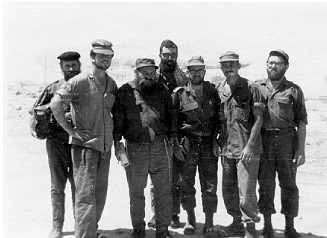

A Special Team for Putting on T’fillin
“I was once invited to a base and I saw a long line of people waiting to put on t’fillin. I asked R’ Zushe how many soldiers put on t’fillin that day and he happily replied, ‘Several hundred.’” * This is not a description of the Six Day War when Mivtza T’fillin began, but a description of a chaplain

Although Mivtza T’fillin officially began at the start of the Six Day War in 1967, there were Lubavitcher Chassidim who put t’fillin on Jews or passersby even before that, at their own initiative.
I found an interesting description of Mivtza T’fillin, which began in 1956 during the Sinai Campaign, in a book written by Rabbi Yitzchok Meir, a military chaplain for many years.
R’ Yitzchok Meir is a distinguished Gerrer Chassid and one of the founders of the military chaplaincy. He was a chaplain for many years and a chief military chaplain who served as the director of Chinuch Atzmai for a number of years. He was mayor of B’nei Brak for two years.
One of the reasons for Operation Sinai at the end of Cheshvan 5717 was the repeated attacks by Fedayeen terrorists. The massacre in the vocational school in Kfar Chabad, which took place on Rosh Chodesh Iyar 5716, had taken place half a year earlier. With the outbreak of war, Israel conquered the Sinai Peninsula, and effectively put a stop to terrorist infiltration.
This is what R’ Meir wrote, as taken from his book, Lo B’Chayil V’Lo B’Ko’ach.
R’ Zushe Wilyamovsky training for the War of IndependenceA SPECIAL TEAM FOR PUTTING ON T’FILLIN
In my work as head of the kashrus branch of the military chaplaincy, I visited the supply bases several times for the purpose of checking the operational system for kashering the meat before it was sent out to the units. In order to operate the system, I enlisted G-d fearing men and bachurim whose job it was to kasher the meat, pack it, and send it out ready to cook.
On one of my visits there, I spoke with members of the Reserves whom I had drafted to work with me. There were Gerrer Chassidim, people from Tzeirei Agudath Israel, and Lubavitchers from Kfar Chabad including R’ Levi Yitzchok Vidaslevsky, R’ Leibel Rosenblum, R’ Leibel Tzishinsky, R’ Moshe Erenstein (later mayor of B’nei Brak), R’ Yaakov Neiman, R’ Yaakov Vichelder and R’ Zushe Wilyamovsky (the “Partisan”), who were sent to kasher the meat. I proposed that we organize a group that would put t’fillin on with the hundreds of soldiers who came to the supply bases every day to get supplies for their units. R’ Zushe the Chabadnik loved the idea and offered to carry it out.
We decided to do a test run for a few days and see how the soldiers reacted to our suggestion that they put on t’fillin and recite Shma. We brought t’fillin and Siddurim and I suggested that a group of people should be organized to put the t’fillin on others, led by R’ Zushe, because he knew how to speak to the soldiers and convince them to put on t’fillin.
We took advantage of the great inspiration following the Sinai Campaign and the open miracles that the soldiers had seen, and we expected a positive response on the part of the soldiers.
R’ Zushe was enthusiastically involved. The very next morning he approached every soldier who arrived at the base to get supplies for his unit and gently said, “Perhaps you would be willing to put on t’fillin and recite the Shma? We ought to thank Hashem for the big miracles He did for us.”
Most of the soldiers immediately acquiesced. Some knew how to put on the t’fillin, but there were those who didn’t. The staff put t’fillin on with them and taught them how to say the bracha. Some soldiers said, with tears in their eyes, “This is the first time in our lives that we are putting on t’fillin, but how are we to blame when they did not make us a bar mitzva and did not teach us how to put on t’fillin?”
Many of them promised that they would put on t’fillin and recite the Shma every time they came to the base. The staff also explained what the t’fillin are about and the significance of the mitzva. R’ Zushe addressed them and said that t’fillin are the Jewish people’s secret weapon, and in the merit of the mitzva of t’fillin we vanquished our enemies.
I visited the base and saw a long line of people waiting to put on t’fillin. I asked R’ Zushe how many soldiers put on t’fillin that day and he happily replied that it was several hundred. He said that he had heard some soldiers say, as though to themselves, that they weren’t at fault since nobody had taught them to put on t’fillin. “They did not buy me t’fillin and did not make me a bar mitzva and so I don’t know how to put them on. But from now on, I will ask the military chaplaincy to provide me with t’fillin and G-d willing, I will put them on everyday.”
Indeed, Jewish children have pure souls and they are “babies taken captive amongst Jews,” and there is nobody to guide them.
I had the privilege of organizing two groups at the supply bases, one that ensured the kashrus of the army and another to take care of t’fillin and t’filla. The pleasure I felt when I stood near the soldiers putting on t’fillin with R’ Zushe and others presiding over them, is indescribable. R’ Zushe announced, “Now, we will all say out loud ‘Shma Yisroel Hashem Elokeinu, Hashem Echad,’” and the camp echoed with the voice of Yaakov accepting the yoke of Heaven.
Members of the rabbinate also arranged shifts of people saying T’hillim in the Air Force, especially when planes left to bomb enemy targets and to conduct air combat with enemy planes.
CHABAD CHASSIDIM INVOLVED IN KOSHER SLAUGHTER IN THE IDF
R’ Meir also tells about the sh’chita and shochtim for the kosher food served in the army. These included famous Lubavitcher Chassidim:
With the conquering of Sharm-el-Sheik (renamed in Hebrew as Mifratz Shlomo – Solomon’s Gulf), we decided to arrange a unit of chaplains including a religious officer and a religious sergeant. Their job was to open a shul there and to arrange for systematic sh’chita so that we could supply the units that were in the area with kosher meat.
After conquering the area, many sheep remained. We were afraid that if we did not arrange sh’chita, the sheep would disappear to all sorts of kumzitzes (of hungry soldiers) without them being shechted properly.
Lieutenant Rabbi Yosef Weiss was selected as religious officer of the Solomon region. He was from Tzeirei Agudath Israel. The shochtim who were sent were: R’ Zev Vilensky, R’ Leib Zalmanov (a Lubavitcher from B’nei Brak), R’ Hirshler of Kfar Saba, R’ Moshe Yaroslavksy (a Lubavitcher from B’nei Brak), R’ Mendel Raskin (of Kfar Chabad), R’ Avrohom Kav, R’ Moshe Tzvi Na’ah (rav of the Chabad community in Petach Tikva), R’ Shlomo Bloch and a yeshiva bachur who volunteered to travel to Mifratz Shlomo as a shochet without being paid.
• • •
If back then there were those who took charge of Mivtza T’fillin with such enthusiasm and devotion, all the more so now, when we are commanded by the Rebbe, must we devote ourselves to Mivtza T’fillin with great enthusiasm.
Shneur Zalman Berger. "A Special Team for Putting on T’fillin." Beis Moshiach, no. 842 (July 20, 2012).